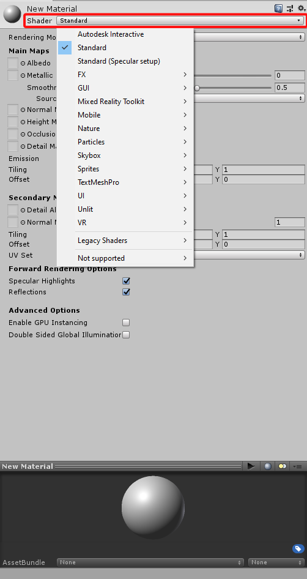
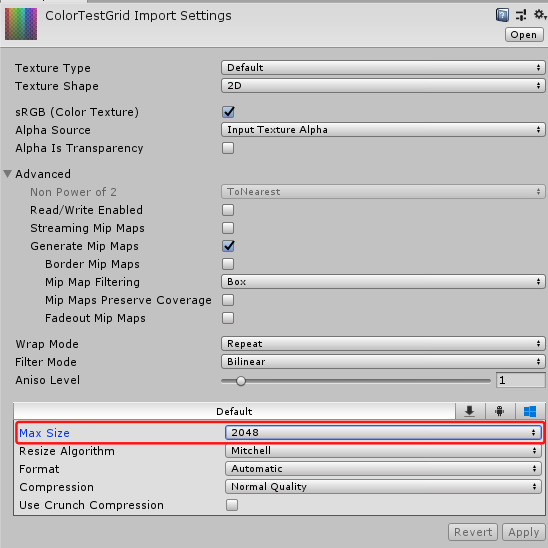
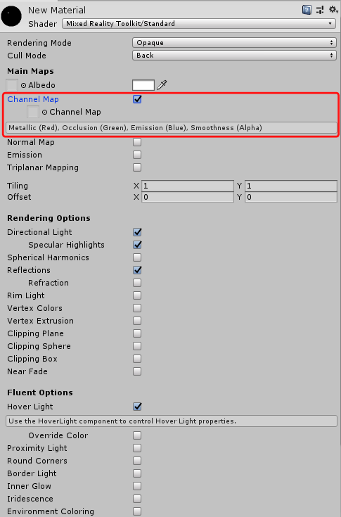
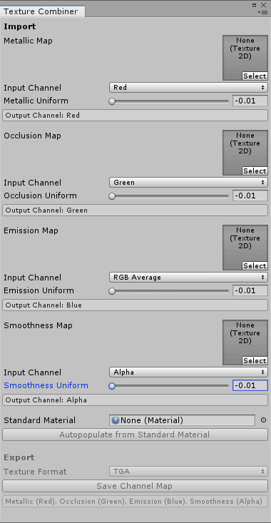

Performance Profiling
Performance Metrics
Monitoring and optimising the performance of an AR application is important to ensure a pleasant user experience. Performance profiling of AR applications is not only concerned with the responsiveness of the app. Instead, developers need to look at further measures like the application’s framerate. The framerate is a number which counts how many images the real-time graphics application can render per second. Maintaining stable, high framerates is a necessary requirement for a pleasant usage experience. In AR and VR applications, low framerates can lead to physical discomfort and dizzyiness in the form of cybersickness.
AR applications are mainly deployed to portable devices like the Microsoft HoloLens and smart phones. Hence, performance profiling also regards the optimisation of the application’s power consumption to avoid that the device’s battery is drained. Additionally, developers should monitor the memory footprint of the application. With real-time graphics applications, an the memory consumption can quickly rise if the developer uses a lot of high-resolution assets like textures or 3D models.
Performance Profiling Tools
There are various different tools which allow developers to monitor and analyze the performance of an application. They are used to identify bottlenecks and narrow down the reason for a restricted performance.
Unity Performance Profiler
Unity has its own built-in profiler. It provides detailed information about the caused CPU load and memory consumption. Additionally, more details are available about the CPU and memory consumption of the rendering pipeline, the physics simulation and the audio sources in the scene.
The Unity profiler can be found in the Unity editor under “Window > Analysis > Profiler” or by pressing Ctrl + 7.
In the top bar there is a button “Record” which needs to be set to active so that the profiler actually tracks the performance data.
With the window open, press the play button in the Unity editor to start the application.
The profiler window will start filling with statistics while the application runs.
The profiler window only visualizes the data of the last 300 frames.
This number can be increased in the preferences of Unity.
Hence, one should pause or stop the application’s execution once interesting data have been generated.
In the top bar of the profiler, there is also an option to save the recorded data in a binary format.
This way, they can be inspected again at a later point by loading the generated log file into the profiler again.
Further information about the profiler can be found in Unity’s documentation about the profiler window.
By default, Unity evaluates the performance of the application while it is running on the development PC. Since it most likely does not have the same hardware specifications as the target device, e.g. the HoloLens, this will not give an accurate impression of the performance of the deployed application. However, it is already helpful to profile on the development PC to analyse which components are computationally expensive.
Profiling a Deployed Application on a Device Using Unity’s Profiler
Unity’s profiler is also able to record statistics of a deployed application while it is running on the target device. A prerequisite for remote profiling is that the application is marked as a Development Build. This option Development Build can be checked in the build window under “File > Build Settings…”. Once this option is marked, you can also check “Autoconnect Profiler”. It will write the IP address of the development PC into the application. Once it is executed, the application will search for the profiler and send data to it.
For the Microsoft HoloLens, the UWP app also requires internet capabilities. It can be set in the player preferences which can be opened in the inspector by clicking the button “Player settings…” in the build window. In the tab for Universal Windows Platform settings which displays a Windows logo, the capabilities can be set in the section Publishing Settings. Check InternetClientServer to allow the application to access network connections and to answer requests by the profiler.
In the top bar of the profiler, there is a dropdown menu which currently says Editor. If you checked “Autoconnect Profiler”, the running application is available in this dropdown menu. Otherwise, there is a second option Enter IP address. Here, you can enter the IP address of the device on which the application is running.
Mixed Reality Toolkit Profiler Window
- how to enable and disable it
- information that it provides
Visual Studio Profiler
- how to access it
- information that it provides
HoloLens Device Portal
- how to access it
- information that it provides
Performance Optimisation
Detailed optimisation of an application starts with identifying the bottlenecks of the application. After that, a change is conceptualised and realised. Finally, the altered version is analysed again to make sure that the optimisation did actually improve the performance. This high-level process is repeated until the application has an acceptable performance. Apart from this general workflow, there are some general hints how a Unity application can be optimised:
Scene Optimisation
For HoloLens applications, the Mixed Reality Toolkit provides an optimisation window which automatically optimises the application for AR. It can be found under “Mixed Reality Toolkit > Utilities > Optimize Window”. For the best usage experience, all listed recommondations should be accepted and applied.
Apart from this, the following criteria can be considered for optimisation. To decide which of these recommendations need to be followed, the application should be profiled first. This way, the bottlenecks can be identified. For instance, there is no need to reduce the complexity of a mesh if there is script in the scene which does a long calculation each frame. In this case, the bottleneck is in the application’s logic and not the rendering process.
Avoid computationally intensive shaders: Shaders are programs which calculate how the surface of an object should be displayed, e.g. how it is shaded. Just like scripts, shaders can be written in an inefficient way or provide unnecessary photorealistic results at the cost of performance. A nice looking visual effect cannot be enjoyed by the user if it slows down the entire application. Hence, you should check if the shaders slow down the rendering process. Every material in the scene is based on a shader. The shader of the material can be changed in its material settings in the inspector using a dropdown at the top:

By default, materials use the Standard shader. This shader uses physically-based shading and offers many options but it is not optimsed for mobile devices. For HoloLens development, it is advisable to restrict the used shaders to the ones which are provided by the Mixed Reality Toolkit. For mobile platforms, Unity already ships with a series of lightweight shaders. They can be found in the category “Mobile”.
Reduce the amount of polygons on meshes: Meshes consist of vertices which are connected by edges. The areas which are framed by edges are faces. Togehter, they define the surface of the object. In the rendering pipeline, the vertices are first processed by a geometry shader which can manipulate the mesh. After that, every polgyon is rasterized. The result of the rasterization are a number of fragments which are candidates for a pixel. The fragments are processed by a pixel shader. Only after that, a depth test is performed to discard the fragments which are occluded by meshes in front of them. This means that every polygon which is potentially visible inside the camera’s view bounds is rendered, even if it is occluded. The more vertices and polyons an object has, the more work the geometry- and pixel-shaders need to perform.
A large mesh can become a bottleneck for the GPU which has to perform the rendering pipeline. However, the mesh can also affect the CPU, e.g. if it has to calculate deformations of the meshes, e.g. character animations. It is necessary to find a balance between a low-resolution mesh which processes fast and a high-resolution mesh which can define smoother curvatures. The number of polygons can be reduced by removing faces which will never be visible. As an example, take the 3D model of a camera. If consists of a cuboid and a cylinder. The cylinder has caps on both sides. However, the cap which touches the cuboid can be removed since it will never be visible nor relevant for the model On this paticular model, this simple change removes 32 triangles and one vertex.
It is also important to know that hard edges and UV seams increase the number of vertices. A vertex is not only represented by its 3D position in space. It also has a 2D position which defines where it is situated on a texture. Additionally, it has a normal vector which points outwards and which is perpendicular to the surface’s curvature. With UV seams, the vertex has two positions on the texture. With hard eges, the vertex has two different normal vectors. Since vertices internally can only have one texture position and one normal, this means that the vertex is duplicated. Both versions of the vertex have the same 3D position but they differ in the texture coordinates or normal vectors.
Reduce the number of objects, use static batching for non-moving objects: For each object in the scene, Unity calls the graphics API to perform a draw call. This has some overhead to it, so a goal is to keep the number of draw calls as low as possible. Unity already does some optimisations by batching objects. This combines their meshes into one big mesh which can be processed in one call. Static batching only works with non-moving GameObjects, e.g. virtual furniture in a scene. To mark such objects as suitable for static batching, there is a checkbox Static in the top right of the inspector.
Reduce the number of different materials, re-use materials: GameObjects can only be combined by batching if they have the same material. Additionally, a GameObject where parts of the mesh have different materials, produce one draw call for each material. Therefore, it is advisable to only use one material per object and to re-use materials. It might be intuitive for the setup in the inspector since it also reduces the amount of work to set up materials. However, it also applies to scripting. If multiple objects should be coloured blue by a script, there is no need to create a new material for each of them and set its colour. Instead, the script can create one blue material and assign it to all required objects.
Optimise the size of textures: Textures should be quadratic and their size should be a power of two, e.g. 256 pixels x 256 pixels, 512 x 512, 1024 x 1024 or 2048, 2048. Textures which do not comply to this rule are stored in an uncompressed format which increases their memory usage and loading times.
Another factor which can be optimized is the resolution of the texture. Only objects with intricate details in the texture and which are intended to be in the close focus of the user should have a righ resolution, e.g. 2048 by 2048 pixels or even 4096 by 4096 pixels. Other textures can be downgraded to lower resolutions. One good practise in this context is to still save textures at a high resolution in the project and then limit their resolution in their texture settings. This way, Unity automatically downscales them in the built project and uses the lower resolution in the final application. Since the original high-resolution version is still available in the project, it is possible to increase the resolution again at a later point if needed. To do this, select the texture in the assets browser. This will open the texture’s properties in the inspector on the right. There is a separate panel where the texture’s Max Size can be set. These settings can also be altered for all platforms independently by clicking the small icons at the top of the panel.

Use shaders which combine multiple textures into one: A PNG texture consists of four channels: Three channels define colours by mixing fractions of red, green and blue. The fourth channel stores alpha values, e.g. for transparency. For textures which define the surface colour and transparency of an object, these channels are actually used. However, opaque objects do not need the alpha channel because there is no transparency. Hence, it can be used for something else, e.g. to define the roughness of the surface. The roughness of the surface is a singular value between zero and one and so it can be encoded by one texture channel. Similarly, PBR materials can define a value that states which parts of the surface are metallic. This value can also be encoded in a single texture channel.
In general, whenever a surface property is expressed by one floating point value for each point of the surface, it only requires one texture channel. If there are four different properties, they can be compressed into the four channels of a texture instead of using four separate textures where three channels are useless. In particular, monochromatic textures (the value is only written to one channel) and greyscale textures (the same value is written to all channels) can be simplified this way. However, this is only possible if the shader supports this compression. The shader must know what information are stored in each channel.
In Unity, some of the shaders support and even require such texture compression. For instance, the shader “Mixed Reality Toolkit/Standard” which is provided with the Mixed Reality Toolkit uses a “Channel Map” which can be activated by checking the corresponding option. It stores metallic values in the red channel, ambient occlusion (which simulates shadows in creases) in the green channel, the emission intensity in the blue channel and the surface smoothness in the alpha channel.

The Mixed Reality Toolkit also provides a tool which compresses multiple textures into the channels of one texture. It can be found under “Mixed Reality Toolkit > Utilities > Texture Combiner”. Here, one can place textures in the slots for each channel. The “Input Channel” dropdown menus define which channel of the given texture should be written to the new texture. If you do not have a texture for one of the properties, the tool can also write a constant value to the new texture’s channel by dragging the slider. Although the descriptions guide the creation of channel maps for the Mixed Reality Toolkit’s standard shader, one can also use this tool for other shaders which expect other channel combinations.

This optimisation reduces the initial loading times of the scene because less textures need to be read. Additionally, this means that less textures need to be kept in memory.
Use primitive colliders, avoid mesh colliders: To work with physics calculations, an object needs colliders. Colliders are used to find out if an object intersects with another object. This is not only useful for physics simulations like a sphere falling to the ground but also necessary for raycasts. Raycasts are needed in a couple of situations, e.g. for user interactions to find out if the user points at an UI element. There are different collider shapes available. Each shape has its own performance cost for collision detection. The quickest collision detection is possible with sphere colliders. To determine if two spheres intersect, the vector between the midpoints of the spheres needs to be calculated. If the length of the vector is smaller than half the radius of the first sphere plus half the radius of the second sphere, the spheres intersect. For Box Colliders, the collision detection is more complex since it involves projections and overlapping tests on multiple axes. Considerable more computation time needs to be spent on Mesh Colliders where Convex is checked. The highest performance hit produce Mesh Colliders with the Convex option unchecked. In this case, each triangle of the mesh needs to be checked for intersections individually. This means that mesh colliders take longer to evaluate the more triangles the mesh has.
Hence, the recommendation is to avoid mesh colliders. Instead, it can be sufficient to approximate a 3D object by a set of primitive colliders, e.g. by shapes, capsules or boxes. The number of colliders should also be kept as low as possible. It is not always necessary to represent the exact shape of the object but instead a hull around it can be sufficient. For instance, virtual characters can be approximated by one big capsule. If a mesh collider has to be used, it can be beneficial to create a second mesh with a lower resolution and use it as the mesh collider.
Use Single Pass Stereo Rendering on Head-Mounted Displays and Single Pass Instanced Rendering for Windows Mixed Reality: Head-mounted displays have one screen for each eye. The two screens show two slightly different images with a shifted perspective. Due to this shift, the user can see the virtual content in 3D with depth perception. However, this also means that the render engine needs to create two images each frame instad of one. Without any optimisations, many portions of the render pipeline need to be done twice. For instance, the number of draw calls, which have a high overhead, doubles. An optimisation technique is Single Pass Stereo Rendering (Unity Blog, 2017). Instead of rendering two separate images, it uses an image texture with a doubled width where both images are created side by side. The advantage is that the work which is done in the rendering pipeline, e.g. the results of the culling process, only needs to be done once (Unity Documentation). A further optimisation is Single Pass Instanced Rendering which can be used for the Hololens (Unity Documentation, Unity Documentation for HoloLens). The optimisation window of the Mixed Reality Toolkit automatically applies this technique.
It is important to know that both optimisation techniques require compatible shaders that need to support the chosen rendering method. The shaders of the Mixed Reality Toolkit work with Single Pass Stereo Instanced Rendering. However, the default shader of the TextMeshPro on Unity 2018 does not work. The text is only rendered on one eye and is invisible for the other eye. To solve this, the TextMeshPro object needs to use a text shader which is provided by the Mixed Reality Toolkit.
Script Optimisation
Use co-routines or threads for long-lasting or blocking operations: Anything logic of a script (except for threaded code) is performed on the main thread. This main thread is also used by the renderer which draws new frames to the user’s screen. Therefore, any operations which take a longer time and are blocking, e.g. I/O operations will freeze the application until they are completed. The user will immediately notice this since no new frames will be rendered until the operation has finished.
The simplest solution to this are coroutines. They use a concurrency approach to divide bigger operations into many small ones. In-between the computation of these individual small elements, the operation releases the control of the main thread again. This gives the renderer and other application components the chance to process the next frame in-between the small chunks of the large operation.
There is also the option to use native C# threads to create a background thread where compute-intensive operations can be executed. With this approach it is important to note that Unity’s API is not thread-safe and may only be accessed by the main thread. This means that no calls to methods provided by Unity or Unity objects can be implemented.
Starting with Unity 2018, there a job system was added to execute multithreaded code.
The job system is also used by Unity itself to handle background tasks.
It creates a thread pool with one thread for each processor core.
This optimises the performance because there is no overhead for creating and finishing threads.
Additionally, each processor core works its own thread which means that the cores perform less context switches.
Like normal threads, Unity jobs still have the problem that Unity’s API is not thread-safe and cannot be accessed.
However, Unity introduced unmanaged, native container classes which are thread-safe.
An example for this is the NativeArray.
Developers can create jobs and schedule them.
After that, they are picked up and executed by one of the available threads.
Avoid Update():
The Update() method is executed every frame.
By moving logic from the Update() method to other solutions, the processing time of every frame can be improved.
As an example, a script should be implemented which realises a virtual light switch.
There is a virtual button which a script ToggleButton.
If the user presses the button, a property IsOn is toggled.
In the example we assume that the input system calls the method OnUserClick() if user input for the GameObject is detected.
The task is to write a script which can visualize this value with a virtual light.
If toggleButton.IsOn == true, the virtual light should be on.
The naive way to implement this is the following:
// this script is placed on the button
public class ToggleButton : MonoBehaviour
{
public bool IsOn {get; private set;}
void OnUserInput()
{
IsOn = !IsOn;
}
}
// this script is placed on the light
public class LightSwitch : MonoBehaviour
{
// Start is called before the first frame update
void Start()
{
}
// Update is called once per frame
void Update()
{
// get the light component on this GameObject
Light light = GetComponent<Light>();
// synchronise the state of the light with the button's IsOn property
light.enabled = (GameObject.Find("MyButton").GetComponent<ToggleButton>()).IsOn
}
}
This script is not optimal in multiple aspects. Another optimisation of this script is addressed in the next paragraph. However, this logic does not need to be implemented by using Update(). Instead, events can be used which are only fired if the value changes. They also have a bit of overhead but since we do not expect that the user is toggling the light, it reduces the amount of code that is executed every frame.
Remove empty callback methods, e.g. Start() and Update():
If you create a new script in Unity, it creates a class that inherits from MonoBehaviour and with two empty methods Start and Update.
While this is convenient, the methods should be removed if they are not used.
Unity will call these methods if they exist and has to perform a context switch to change between internal code and the C# script.
The overhead gets considerable if it has to be done multiple times every frame as it is the case with multiple empty `Update methods on different GameObjects.
Cache the result of queries for other GameObjects or MonoBehaviours:
Other GameObjects can be found by GameObject.Find("objName").
This call searches the entire scene for a GameObject with the given name, so this call will be slow if there are many objects in the scene.
The performance hit is especially big if this is method is executed every frame.
For such cases, it is more efficient to use GameObject.Find just once in the Start method and to cache the result in a private variable.
Another solution is to establish the reference directly in the editor by exposing a public variable or adding the [SerializeField] attribute to a private value.
This way, the variable is shown in the inspector in Unity’s editor and the GameObject can be referenced by dragging and dropping it into the field of the variable.
This is also more stable regarding changes.
If the GameObject is renamed, the drag-and-drop reference is maintained.
In contrast to this, all GameObject.Find calls in the code need to be updated manually to the new name of the GameObject.
Similar recommendations exist for other calls which fetch references, e.g. GetComponent() or GetGameObjectsWithTag().
They are expensive operations and it is better to cache their result in the script instead of executing them repeatedly.
Do not use Camera.main:
A pitfall regarding the previous recommendation to minimise the use of reference-fetching methods is Camera.main.
At a glance, this seems to be a useful public variable where the main camera of the scene was cached.
However, calling Camera.main triggers a FindGameObjectsWithTag() every time.
It searches a GameObject with the tag MainCamera and does not cache the result.
Hence, Camera.main should be regarded as a reference-fetching method.
It should be used sparingly by calling it once in the initialisation of the script and then caching the result.
Use object pooling to minimise the usage of the garbage collector:
Unlike more-low level programming languages like C++ where developers need to allocate and release memory manually for their objects, C# has a garbage collector which automates the memory management.
If a new object is created, usually with the new keyword, memory is allocated.
In regular intervals or if there is no memory left, the garbage collector interrupts the execution of the program.
It analyses which objects are not used anymore and frees the memory that was occupied by these objects.
While this takes away the development effort of manually managing memory, it comes at a performance trade-off.
The gargabe collector has a large overhead and can lead to visible stuttering in the 3D application if a lot of objects need to be cleaned up.
Hence, it is advisable to avoid creating new objects and reusing them instead.
As an example, a list List<string> myList = new List<string>() can be emptied with myList.Clear() instead of calling the constructor myList = new List<string>() again.
Both calls end up with an empty list but the version with the constructor creates a new object, allocates new memory and the garbage collector will clean up the memory occupied by the old list.
Instantiate() and Destroy() create and remove GameObjects and components.
These operations are expensive because they allocate and deallocate memory and need to register and deregister the new components, callback methods, etc.
Destroyed GameObjects are cleaned up by the garbage collector.
Instead of Instantiate() and Destroy(), a technique called object pooling can be implemented.
The number of necessary GameObjects are created once in the beginning and they are added to a collection of unused GameObjects.
Instead of calling Instantiate() in the code again, the code now requests a GameObject from the pool.
Once the object is not used anymore, it is not destroyed but returned to the pool.
Object pooling cannot only be used for GameObjects but for any object. As an example, it is an important technique when meshes are created via code.